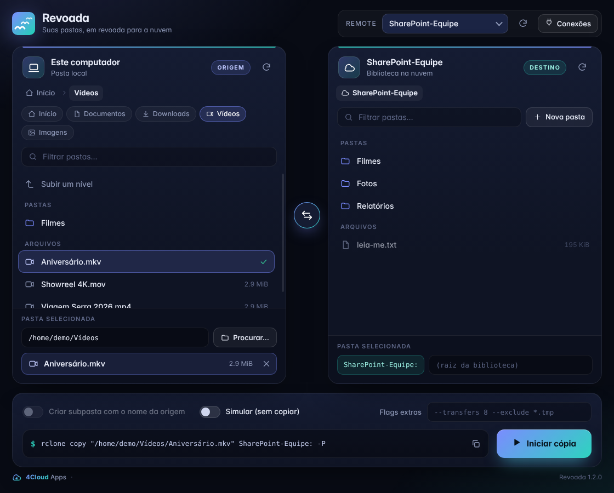
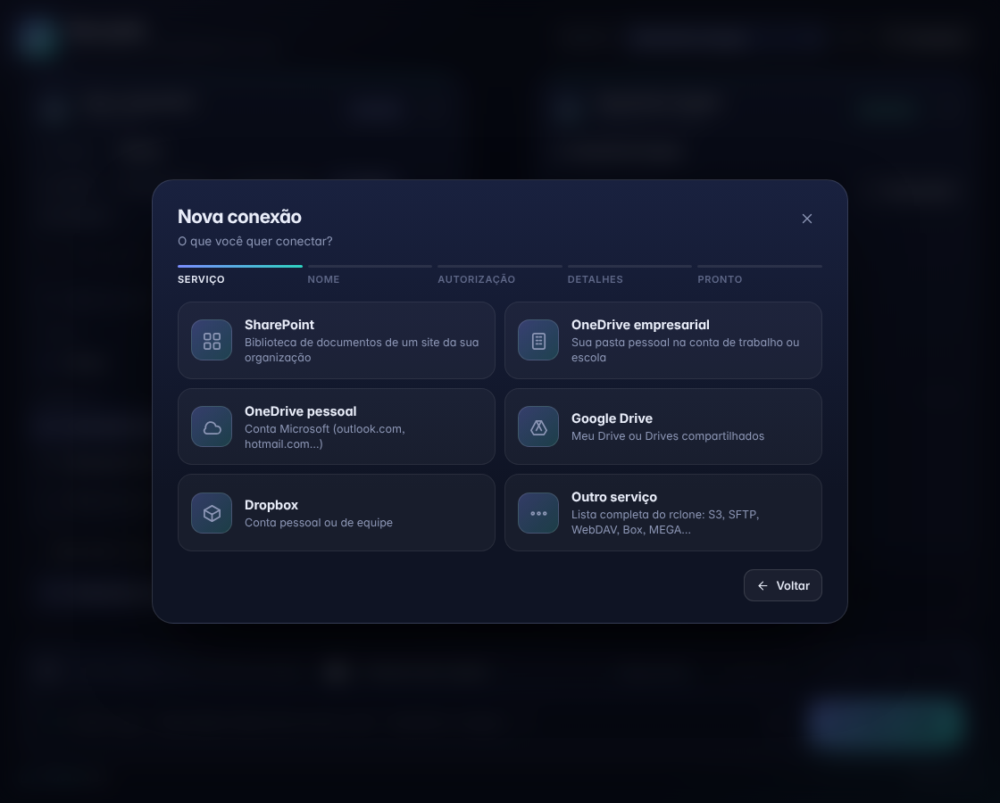
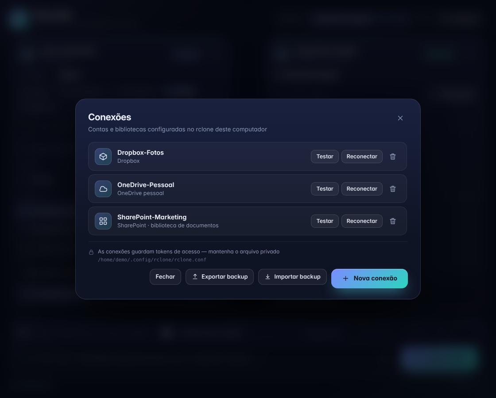
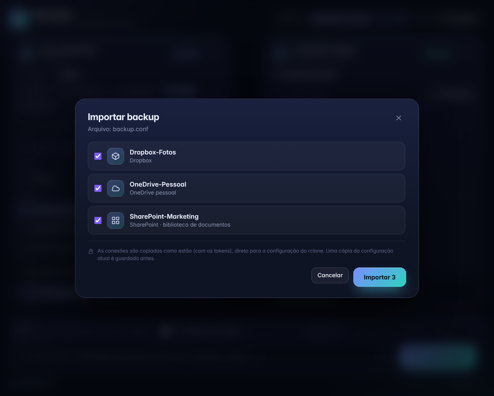

Copie pastas e arquivos entre o seu computador e o SharePoint, OneDrive, Google Drive, Dropbox e dezenas de outros serviços. Dois painéis lado a lado, sem decorar comandos. Por baixo, o confiável rclone.

O Revoada não substitui o rclone: ele é uma casca bonita por cima dele. O comando que será executado aparece sempre na tela, sem mistério.
Navegue pelo computador e pela nuvem lado a lado, com pastas e arquivos. Troque origem e destino com um clique.
Escolha uma pasta inteira ou um único arquivo para copiar. No destino, os arquivos aparecem só para consulta.
Veja o rclone copy exato, copie-o e acrescente flags extras. Marque Simular para ensaiar sem copiar nada.
Porcentagem, velocidade, tempo restante e arquivos em transferência, com cancelamento a qualquer momento.
Conecte SharePoint, OneDrive, Google Drive, Dropbox ou qualquer serviço do rclone com um assistente guiado e login pelo navegador.
Exporte o seu rclone.conf antes de formatar e importe depois, escolhendo quais conexões restaurar.
Da primeira conexão à cópia concluída.
Em Conexões › Nova conexão, escolha o serviço e autorize no navegador. Já tem um rclone.conf? Importe-o.
Navegue nos dois painéis. Clique em um arquivo para copiar só ele, ou deixe apenas a pasta.
Revise o rclone copy mostrado na tela. Se quiser, simule antes.
Acompanhe o progresso em tempo real. O rclone cuida do resto.



rclone.conf: você escolhe o que trazer.Escolha a sua plataforma na página de versões. Os arquivos ficam em Assets.
sudo dnf install rclone, pacman -S rclone, apt install rclone).--appimage-extract-and-run.$ chmod +x Revoada-*.AppImage $ ./Revoada-*.AppImage
Revoada.exe.rclone.exe já vem incluído.Não. Ele usa o rclone instalado (ou o que vem junto no pacote do Windows) para fazer todo o trabalho. O Revoada só torna o processo visual.
Apenas no rclone.conf, como em qualquer uso do rclone. A interface do app nunca recebe os tokens. O backup exportado contém esses tokens: guarde-o como uma senha.
Não há telemetria. O app só conversa com o rclone da sua máquina, e o rclone com o serviço de nuvem que você escolheu.
Não. Uma conexão que já existe só é substituída se você marcar substituir, e uma cópia da configuração anterior é guardada antes de qualquer gravação.
Sim: OneDrive, Google Drive, Dropbox e todos os serviços suportados pelo rclone (S3, SFTP, WebDAV, Box, MEGA e muitos outros) pela opção Outro serviço.